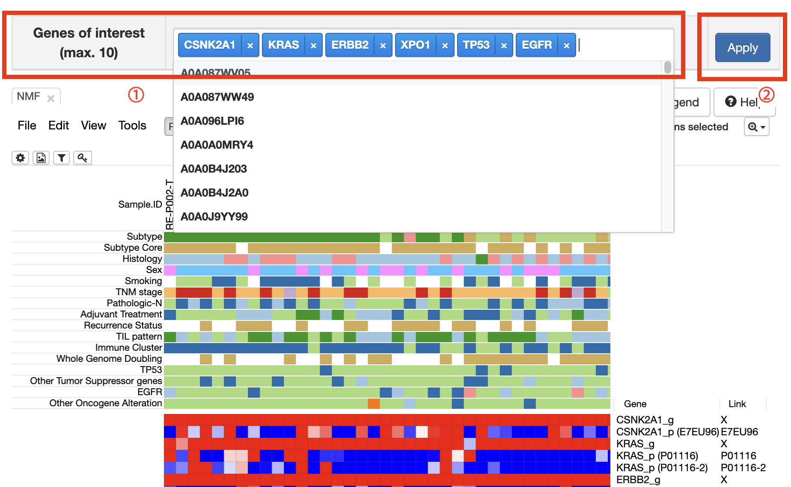
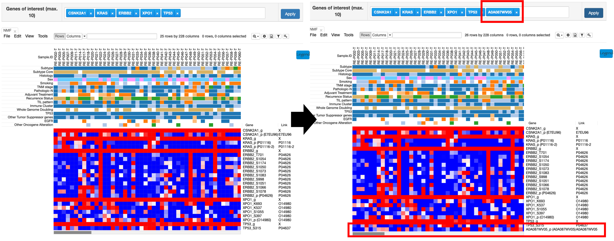
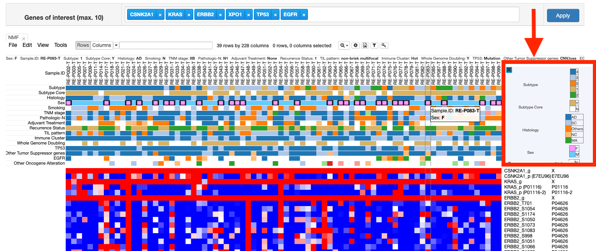
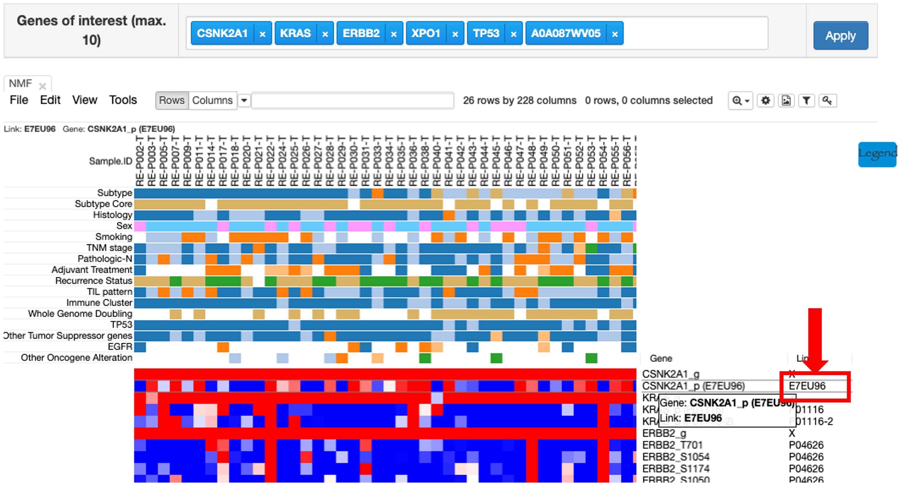
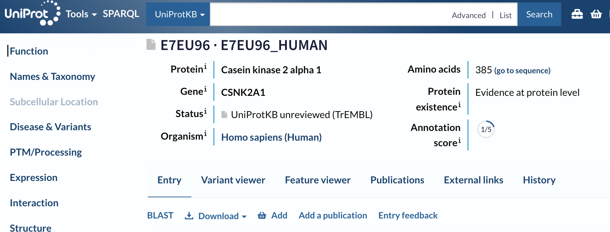

About NMF Cluster
In this page, you can check the relationship between genes and patients information with NMF cluster data.
Basic functions
1. Click the apply button
If you want to check some genes, then insert genes in blank of 'Genes of interest' (①).
After inserting it, please push the 'Apply' button (②).
Then, you can check the heatmap which show the relationship between patient with chosen genes.
2. Click the legend button

If you click the 'Legend' button, you can get the information of NMF cluster data like below.

3. Click the Link column
You can see the Link column on the right side.

It means the Uniprot ID which have relationship with gene.

It has a hyperlink to connect Uniprot site.
Therefore, if you click that ID, not starred 'X', you can move to Uniprot site.

Tab funtions
It consists of Morpheusfunctions.
Therefore, if you want to check how to use tab function, please follow the Morpheus tutorial.